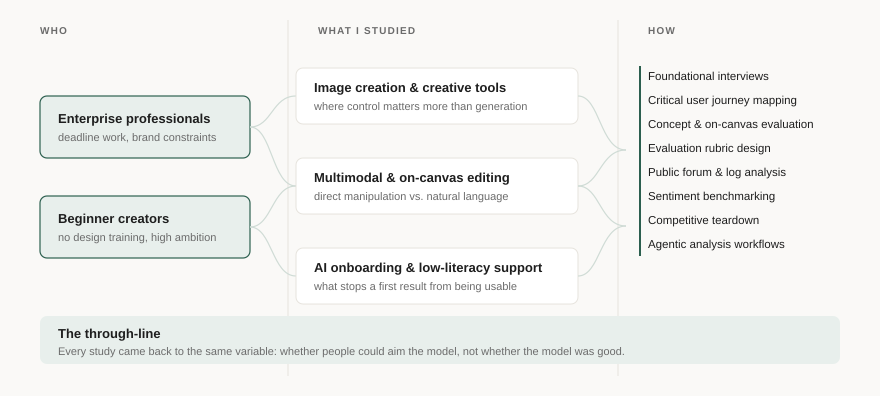
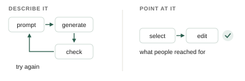

When AI can generate anything, why do people still want to point and click?
A 0→1 research arc on Google Pics — from how professionals actually make visual content, to the interaction model that shipped.

Before there was a product
The work started with no interface to evaluate — just a bet that generative AI belonged somewhere in how people make visual content at work. So the first question wasn't about AI at all. It was how full-time professionals actually produce and edit visual work today, and where that process hurts.
Three patterns came out of that foundational round. Feedback on visual work arrives late, conflicting, and scattered across channels, so the expensive part of design isn't the making, it's the reconciling. People without design backgrounds struggle to articulate what they want until they can point at an example, which is why mood boards exist and why they cost so much time. And the tools people already used were easy to start with but hard to finish with — approachable enough to produce something, not controllable enough to produce something polished.
That last one reframed the opportunity. The gap wasn't generation. Plenty of tools could already generate. The gap was control.
The question that mattered
Once there was a prototype, the sharpest open question was the interaction model: should people describe the edit they want in words, or manipulate the image directly? Natural language is the obvious answer for a generative product, and it was the wrong one.
In an interview and evaluation study of on-canvas editing controls, people reached for direct manipulation over prompting consistently and without prompting from us. Given a choice between describing a change and selecting the thing they wanted to change, they selected. Prompting was what they fell back on when selection failed.

Where trust actually broke
The same study surfaced three failure modes, and they were all about control rather than output quality.
A two-step apply pattern designed for batching broke down for single edits, where people expect immediate execution and real-time feedback — every participant tripped on it. System states during object detection were ambiguous enough that people couldn't tell whether the tool was working or stuck. And most damaging, localized edits sometimes changed regions the user hadn't selected. That last one destroyed confidence faster than any rendering flaw, because a tool that edits things you didn't ask it to edit is a tool you have to check constantly.
Closing the loop before launch
Ahead of general availability, readiness research asked a blunter question: would this replace what people already use? Not yet, was the honest answer. The product was additive — people kept their existing tools alongside it, largely because ordinary utilities were missing and because output quality degraded across successive edits. A generative editor that gets worse the more you edit is one that punishes iteration, which is exactly what its best users do most.
What shipped
Google Pics reached general availability in September 2026. The public announcement describes hover-and-select object-based local editing, individual text element editing, cropping, upscaling, and version history for reverting changes — direct manipulation as the primary interaction, the table-stakes utilities that had been sending people back to other tools, and a way to recover from an edit that went wrong.
Reflection
The instinct with a generative product is to research the output: is it good, is it accurate, does it look right. Almost everything that mattered here was upstream of output. People will forgive a mediocre result they can correct, and abandon an excellent one they can't aim. Most of my value on this team came from insisting that control was the research question while the debate was still about quality.